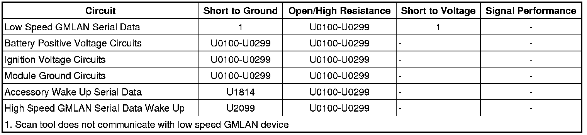

U0121
DTC U0100-U0299
Diagnostic Instructions
* Perform the Diagnostic System Check - Vehicle (Initial Inspection and Diagnostic Overview) prior to using this diagnostic procedure.
* Review Strategy Based Diagnosis (Initial Inspection and Diagnostic Overview) for an overview of the diagnostic approach.
* Diagnostic Procedure Instructions (Initial Inspection and Diagnostic Overview) provides an overview of each diagnostic category.
DTC Descriptors
DTC U0100 00
- Lost Communication With ECM/PCM
DTC U0100 75
- Lost Communication With ECM/PCM
DTC U0100 7F
- Lost Communication With ECM/PCM
DTC U0101 00
- Lost Communication With TCM
DTC U0102 00
- Lost Communication With Transfer Case Control Module
DTC U0104 00
- Lost Communication With Cruise Control Module
DTC U0104 7F
- Lost Communication With Cruise Control Module
DTC U0117 00
- Lost Communication With Electrical PTO Control Module
DTC U0121 00
- Lost Communication With Anti-Lock Brake System (ABS) Control Module
DTC U0122 00
- Lost Communication With Vehicle Dynamics Control Module
DTC U0131 00
- Lost Communication With Power Steering Control Module
DTC U0132 00
- Lost Communication With Ride Level Control Module
DTC U0134 00
- Lost Communication With Power Steering Control Module - Rear
DTC U0136 00
- Lost Communication With Differential Control Module - Rear
DTC U0140 00
- Lost Communication With Body Control Module
DTC U0141 00
- Lost Communication With Body Control Module A
DTC U0151 00
- Lost Communication With Restraints Control Module
DTC U0151 71
- Lost Communication With Restraints Control Module Invalid Serial Data Received
DTC U0151 7F
- Lost Communication With Restraints Control Module Erratic
DTC U0155 00
- Lost Communication With Instrument Panel Cluster (IPC) Control Module
DTC U0156 00
- Lost Communication With Information Center A (DIC)
DTC U0158 00
- Lost Communication With Head Up Display
DTC U0159 00
- Lost Communication With Parking Assist Control Module
DTC U0160 00
- Lost Communication With Audible Alert Control Module
DTC U0164 00
- Lost Communication With HVAC Control Module
DTC U0165 00
- Lost Communication With HVAC Control Module - Rear
DTC U0168 00
- Lost Communication With Vehicle Security Control Module
DTC U0170 00
- Lost Communication With Restraints System Sensor A (PPS)
DTC U0172 00
- Lost Communication With Rollover Sensor
DTC U0184 00
- Lost Communication With Radio
DTC U0186 00
- Lost Communication With Audio Amplifier
DTC U0291 00
- Lost Communication With Television
DTC U0194 00
- Lost Communication With Digital Radio Receiver (DRR)
DTC U0198 00
- Lost Communication With Telematic Control Module
DTC U0199 00
- Lost Communication With Door Control Module A (DDM)
DTC U0200 00
- Lost Communication With Door Control Module B (PDM)
DTC U0208 00
- Lost Communication With Seat Control Module A (DSM/MSM)
DTC U0209 00
- Lost Communication With Seat Control Module B (HVSM)
DTC U0210 00
- Lost Communication With Seat Control Module C (RHVSM)
DTC U0214 00
- Lost Communication With Remote Function Actuation
DTC U0230 00
- Lost Communication With Rear Gate Module
DTC U0232 00
- Lost Communications With Side Object Detection (SOD) Module - Left
DTC U0233 00
- Lost Communications With Side Object Detection (SOD) Module - Right
DTC U0236 00
- Lost Communications With Column Locking Module (CLM)
DTC U0241 00
- Lost Communication With Headlamp Control Module A
DTC U0249 00
- Lost Communication With Entertainment Control Module - Rear B
Diagnostic Fault Information

Circuit/System Description
Modules connected to the high and low speed GMLAN serial data circuits monitor for serial data communications during normal vehicle operation. Operating information and commands are exchanged among the modules. The modules have prerecorded information about what messages are needed to be exchanged on the serial data circuits, for each virtual network. The messages are supervised and also, some periodic messages are used by the receiver module as an availability indication of the transmitter module. Each message contains the identification number of the transmitter module.
The body control module (BCM) activates the serial data communication enable and the accessory wakeup serial data circuits by applying voltage when the ignition key is in ACC, ON or START. Only the modules using high speed GMLAN serial data are connected to the enable or wakeup circuits. To determine which modules are activated using the enable or wakeup circuits refer to Data Communication Schematics (Electrical Diagrams) .
Conditions for Running the DTC
* The system voltage is between 9-16 volts.
* The vehicle power mode master requires serial data communication to occur.
Conditions for Setting the DTC
A supervised periodic message that includes the transmitter module availability has not been received.
Action Taken When the DTC Sets
The modules is never signaled, therefore the specific subsystems will not function.
Conditions for Clearing the DTC
* A current DTC clears when the malfunction is no longer present.
* A history DTC clears when the module ignition cycle counter reaches the reset threshold of 50, without a repeat of the malfunction.
Diagnostic Aids
* Use the DTC Descriptor list above to determine the module which is not communicating.
* If there are multiple non-communicating modules choose the one closest to the data link connector (DLC).
* Use Data Link References (Data Link References) to determine if the module uses high or low speed GMLAN serial data communications.
* Some modules may not have internal protection for specific voltage outputs and may open a battery positive voltage or ignition voltage source fuse. If a voltage input fuse is open and no short is found in that circuit, ensure that no module output voltage circuit is shorted to ground before replacing the module.
* This diagnostic can be used for any module that should communicate with high or low speed GMLAN serial data providing the vehicle is equipped with the option that uses that module.
Reference Information
Schematic Reference
* Data Communication Schematics (Electrical Diagrams)
* Control Module References (Programming and Relearning)
Connector End View Reference
Component Connector End Views (Connector Views)
Description and Operation
Data Link Communications Description and Operation (Description and Operation)
Electrical Information Reference
* Circuit Testing (Component Tests and General Diagnostics)
* Connector Repairs (Component Tests and General Diagnostics)
* Testing for Intermittent Conditions and Poor Connections (Component Tests and General Diagnostics)
* Wiring Repairs (Component Tests and General Diagnostics)
Circuit/System Testing
1. Using the DTC Descriptor and Diagnostic Aids above, determine the module that is not communicating that should be tested.
2. Ignition OFF, disconnect the harness connector of the module that is not communicating.
Important: Only the high speed GMLAN modules have a the serial data communication enable circuit OR the accessory wakeup serial data circuit. Refer to the module schematics to identify which modules have these circuits. If the module that is not communicating does not have one of these circuits, proceed to step 4.
3. Ignition ON, verify that a test lamp illuminates between the serial data communication enable circuit OR the accessory wakeup serial data circuit and ground.
• If the test lamp does not illuminate, repair the circuit for an open/high resistance. If the circuits test normal, replace the BCM.
4. Ignition ON, verify that a test lamp illuminates between all battery positive voltage circuits and ground.
• If the test lamp does not illuminate, repair the circuit for a short to ground or an open/high resistance. If the circuit fuse is open, also test the positive voltage outputs of the module for a short to ground. If the circuits test normal, replace the faulty module.
5. Verify that a test lamp illuminates between all ignition voltage circuits and ground.
• If the test lamp does not illuminate, repair the circuit for a short to ground or an open/high resistance. If the circuit fuse is open, also test the positive voltage outputs of the module for a short to ground. If the circuits test normal, replace the faulty module.
6. Test for less than 1 ohm of resistance between the module ground circuits and ground.
• If greater than 1 ohm, repair the ground circuit for an open.
7. Use Data Link References to determine if the non-communicating module should use low speed GMLAN serial data.
• If the module is GMLAN high speed only, replace the module.
8. Test for less than 1 ohm of resistance in the low speed GMLAN serial data circuit between the non-communicating module and the module that displays the DTC.
• If greater than 1 ohm of resistance, test the low speed GMLAN serial data circuit for open/high resistance.
9. If all circuits test normal, replace the module that is not communicating.
Repair Instructions
Perform the Diagnostic Repair Verification (Verification Tests) after completing the diagnostic procedure.
* GMLAN Wiring Repairs (Component Tests and General Diagnostics)
* Control Module References (Programming and Relearning) for module replacement, setup, and programming